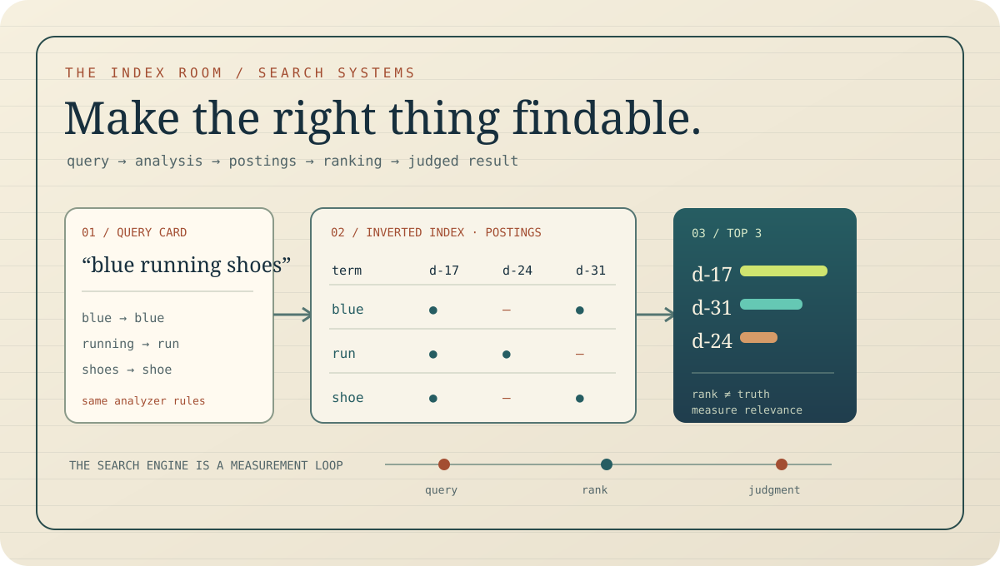

Tokenization, analyzers, and index/search-time processing.
Free query lab12 lessonsCorpus worksheets + scorecardsIra
Search Systems in Production: The Index Room
Search is a promise about what a person can find—not a box that returns documents. We’ll take one small catalog from raw text to ranked results, change one design choice at a time, and keep a record of what improved, what regressed, and what it cost.
Notebook method: every lesson starts with a query and a tiny corpus. We write the expected result before tuning the index. Toy examples are labeled; production numbers are never implied by them.
By Ira · Data desk · 8-hour guided estimate · Updated October 10, 2026

QueryWhat does the user mean?
IndexWhat did we make retrievable?
JudgmentDid the best answer surface?
After these lessons, you can
- Design analyzers and mappings around the language people actually search.
- Explain postings, BM25, shards, refresh, merges, and the trade-offs behind each.
- Build a relevance test set and choose metrics that fit the search task.
- Compare lexical, vector, and hybrid retrieval without treating embeddings as a relevance shortcut.
The course uses Elasticsearch and OpenSearch documentation as concrete references, but the underlying ideas apply across search engines. Configuration details are version-dependent.
01 · Query card · Product contract
Write the result you want before you rank it
A shopper types “quiet grinder.” Do they want low measured sound, a product described as quiet, or a machine for a small apartment? The engine can only optimize the relevance label the team agrees to collect. Start with query classes, user intent, freshness needs, and what a “good” top result means.
Separate retrieval from presentation. Retrieval asks which documents are candidates; ranking orders those candidates; the interface explains or filters them. Keep a handful of representative queries and judged documents as a baseline before changing analyzers or boosts. Otherwise every tuning session becomes a debate about the last result someone remembers.
QUERY CARD / illustrative catalog
Query: “quiet grinder” · Intent: compare products by noise and use case.
Expected top hit: a product with a measured noise value and matching grinder type—not a page that repeats “quiet” five times.
Bench task: Write 20 queries: navigational, exact identifier, broad discovery, typo, and multi-constraint. Add a “why relevant” note to each judged document.
Elastic · Ranking evaluation02 · Token worksheet · Analysis
The analyzer is part of the product language
At index time and query time, text is tokenized and normalized. Lowercasing may be right for ordinary prose; it may be wrong for case-sensitive product codes. Stemming can connect “running” with “run,” but can also collapse meanings a domain cares about. Synonyms can rescue vocabulary mismatch, but a poorly scoped synonym graph can create surprising expansions.
Inspect tokens instead of guessing. Try punctuation, diacritics, hyphens, plurals, and one known identifier. Match the index and search analysis intentionally, then treat analyzer changes as schema migrations: old indexed terms do not magically re-tokenize when the configuration changes.
| Input | Possible analysis | Risk to check |
|---|---|---|
| AX-42 | ax, 42 | Exact code split? |
| running shoes | run, shoe | Does morphology help? |
| Wi-Fi | wi, fi | Does punctuation alter intent? |
Bench task: Pick five real failed queries and compare analyzer output against the tokens users expect to match.
Elastic · Text analysis03 · Index sketch · Retrieval structure
Inverted index turns a scan into a lookup
For a tiny corpus, scanning every document is simple. As the corpus grows, an inverted index maps each term to the documents—and often positions—in which it appears. A query intersects or combines posting lists, then applies scoring and filters. Positions support phrase-like queries; frequencies support relevance; stored fields may support highlighting or retrieval.
There is no free index. Every searchable field and positional detail consumes storage and indexing work. Decide what needs full-text analysis, exact matching, sorting, and aggregation separately. A field that is only displayed may not need the same index structures as one used for ranking or faceting.
Bench task: For a toy corpus of 6 docs, hand-build postings for one title term and one positional phrase. Explain which docs survive each query.
Elastic · Lucene segments and search visibility04 · Score lab · Lexical ranking
BM25 rewards evidence, then saturates
BM25 is the default similarity in Elasticsearch: term frequency contributes with diminishing returns, rare terms carry more information than common ones, and document length is normalized. The controls commonly discussed are k1 for term-frequency saturation and b for length normalization. Their values are not universal tuning knobs; the corpus and task decide.
A document that repeats “quiet” 40 times should not become 40 times more relevant. A short title match may be stronger than one appearance in a long footer. Field boosts can express a product prior—title matters more than description—but keep that prior testable with judged queries. Inspect explanations for a few examples, then evaluate the set, not just the memorable one.
Bench task: Compare a short exact-title hit with a long body-text hit. Decide which should win for a product-name query and encode that expectation in the test set.
Elastic · Similarity settings and BM2505 · Mapping review · Data shape
One string may need more than one field
A title may need analyzed text for relevance and a keyword-like representation for exact sorting or aggregation. A price should be numeric, a timestamp should be a date, and a facet should have a deliberate cardinality plan. Dynamic mappings are convenient at the start; uncontrolled new fields can grow heap, cluster metadata, and the surface area of every query.
Make the mapping reflect actual operations. Store only what must be returned; index only what must be found, sorted, or aggregated. Treat nested objects carefully because hidden document expansion changes counts and storage. Before changing a field type or analyzer, plan how existing documents will be reindexed and how aliases will switch traffic back if validation fails.
Bench task: Take one JSON product record and annotate each property as full-text, exact filter, sort, aggregate, display-only, or not needed.
Elastic · Explicit mappings06 · Fan-out map · Distributed query
Every shard is another search to coordinate
In a sharded search engine, a query fans out to relevant shard copies, each produces a local top set, then a coordinating node merges results. More shards can distribute data and work, but broad fan-out adds scheduling, network, merge, and heap pressure. Oversharding can make a modest query expensive even when each individual shard is small.
Choose shard strategy by measuring on production-shaped data and hardware. Include the query mix, indexing load, recovery time, and growth horizon. Time-series indexes may benefit from rollover and lifecycle policies; a single huge collection may need a different partition plan. Avoid treating a vendor’s size range as a substitute for a benchmark of your workload.
Bench task: Hold the corpus constant. Compare p95 and recovery time for two shard layouts under both search and ingest pressure.
Elastic · Size your shards07 · Freshness clock · Visibility
Indexed does not necessarily mean searchable now
Elasticsearch uses refresh to make recent operations visible to search. A refresh opens newly written Lucene segments; it is not the same thing as forcing every byte to durable storage. The distinction matters: a request can be accepted and replicated under one durability contract while a search does not yet see it under the refresh contract.
Write down the product’s freshness requirement. A catalog may accept a short delay; a user editing a document may expect immediate read-after-write. Forcing refresh on every write can damage indexing throughput. Use a deliberate refresh policy for interactive paths, and measure visibility lag rather than assuming “real time” means synchronous.
Bench task: Record accepted-at and first-searchable-at timestamps for a test document. Report the distribution and the chosen product threshold.
Elastic · Near real-time search08 · Segment ledger · Write path
Updates create work that the merge later pays
Lucene segments are immutable once written. A document update is represented as a new version and the old one is marked deleted; segment merges reclaim obsolete data and combine structures. This write-then-merge design makes refresh practical, but heavy update churn can create merge pressure, disk amplification, and temporary space requirements.
Bulk indexing reduces request overhead, but huge bulks can increase memory pressure and tail latency. Tune batch size empirically; monitor merge time, disk watermarks, rejected writes, and indexing latency together. For append-heavy time series, rolling whole indexes out may be cheaper than deleting individual documents. Retention is part of the index architecture.
Bench task: Compare append-only ingest with repeated updates on the same IDs. Track bytes written, merge backlog, search latency, and disk headroom.
Elastic · Bulk API and refresh controlElastic · Shards and segment overhead09 · Filter plan · Structured search
Facets are queries with a budget
Filters narrow candidates using structured values: stock state, region, category, access scope. Facets summarize what remains so users can refine the search. They are not just decoration; high-cardinality aggregations, broad ranges, and repeated counts can consume CPU and memory. Apply mandatory authorization and tenant filters in the right place, then test both correctness and execution cost.
Decide whether counts must be exact, how many buckets are returned, and whether a cached or approximate view is acceptable. A facet that is technically correct but takes two seconds to update is a product decision hiding in query configuration. Filter order can affect execution strategies, though modern engines optimize many cases; profile the real query instead of cargo-culting order rules.
Bench task: Add category, region, and price facets to the query set. Measure latency as cardinality grows and write down which counts users actually need.
Elastic · Aggregations10 · Retrieval comparison · Hybrid search
Vectors add a retrieval signal, not a relevance oracle
Lexical retrieval is strong for identifiers, exact phrases, and rare terms. Dense vectors can retrieve semantically related wording that shares few tokens. They can also return a conceptually nearby result that violates a crucial constraint: the wrong model, jurisdiction, product version, or date. Metadata filters and lexical signals remain important.
Hybrid search combines signals, but their raw scores may not be on compatible scales. Rank fusion methods such as reciprocal-rank fusion combine orderings rather than assuming equal score units. Compare lexical-only, vector-only, and hybrid against the same judged queries, segmented by intent. Keep a fallback and track latency, candidate count, vector-index storage, and embedding freshness.
| Query type | Lexical signal | Vector signal | Guardrail |
|---|---|---|---|
| serial number | strong | often weak | exact field |
| “stops squeaking” | vocabulary mismatch | may help | product filters |
| “latest 2026 policy” | terms + date | semantic only | freshness filter |
Bench task: For each query class, state which retrieval path can find the target and which metadata constraint must never be softened.
OpenSearch · Hybrid search11 · Judgment sheet · Evaluation
Measure where relevant results land
Build a set of representative queries with graded judgments. Precision at k asks how many top results are relevant; recall at k asks how much of the relevant set was retrieved; mean reciprocal rank rewards an early first good result; discounted cumulative gain accounts for graded relevance and position. Choose the metric that reflects the search task, then inspect query-level failures.
One global score hides unhappy segments. Break down by query class, locale, user cohort, freshness, and zero-result behavior. Keep a holdout set while tuning so you do not repeatedly optimize to the same judgments. Pair offline scores with online signals carefully: clicks are noisy, position-biased, and not the same as satisfaction.
Bench task: Score one test set with P@5 and MRR. Find a query where those metrics disagree with your product judgment; revise the metric or the contract.
Elastic · Ranking evaluation metrics12 · Capstone · Search review
Launch one catalog search you can explain
Design search for a 5-million-item catalog with title, description, brand, price, region, stock state, and an optional semantic signal. Do not start with node counts. Start with query classes, freshness contract, authorization rules, and a judged baseline. Then propose mappings, analyzer behavior, shard layout, refresh policy, ranking, and retention.
Hand in a one-page experiment card: workload assumptions, corpus sample, five query failures, before/after ranking metrics, p50/p95 latency, indexing visibility lag, disk and memory estimates, and rollback steps. Mark every invented workload number as modeled. A successful search launch is not “the cluster is green”; it is evidence that people find the intended thing at an acceptable cost.
Review gate: Ask a teammate to explain why result one beat result two for three different query types, using the index and the judged baseline—not “the model liked it.”
Continue with RAG in Production for retrieval-augmented generation, or Data Pipelines That Pay for ingestion and freshness design.
Research shelf · technical references
BM25 defaults and the effects of its parameters.
Lucene segments, refreshes, and search visibility.
Oversharding, recovery, benchmarking, and shard overhead.
Combining lexical and neural retrieval pipelines.
Precision, recall, reciprocal rank, and discounted gain.
The toy corpus, rankings, and query cards are invented teaching examples. Engine behavior and tuning details can vary by version; consult the linked documentation for the release you deploy.